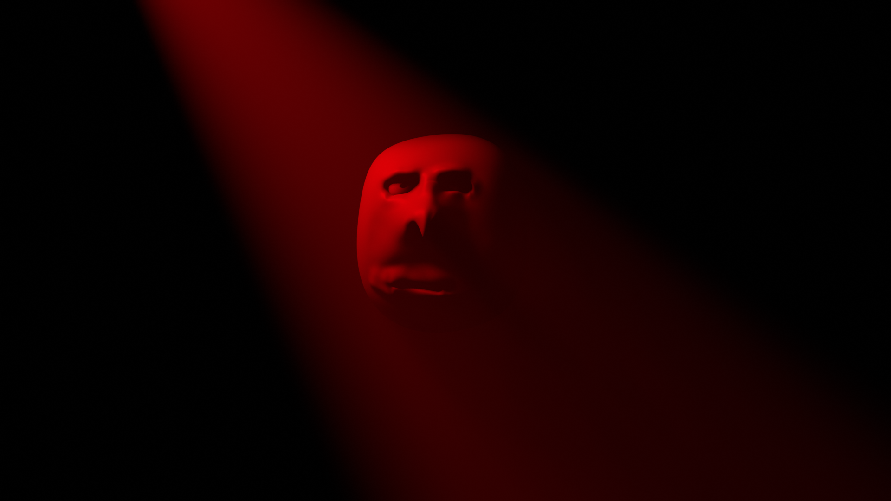
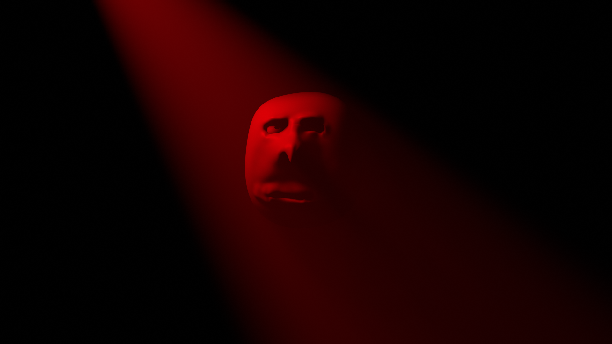

<--- это один из моих аватаров:3
Мои качества и чё вообще умею:
Меня зовут GeroldGmanFerrum(или же Ferrum Steel Ocean). Мне 15 лет(на момент создания сайта). Мой дом находится в юго-западной части России, в районе кормилицы Росиии. Работаю когда потребуют и домой возвращаюсь, самое позднее, в четыре-пять вечера. Не курю, выпиваю на застолье. Ложусь спать в 10-11 вечера и убеждаюсь, что получаю ровно восемь часов сна, несмотря ни на что. Перед сном я пью тёплое молоко или воду, а также минут двадцать уделяю разминке или зачастую другому занятию, поэтому до утра сплю без особых проблем. Утром я просыпаюсь, не чувствуя ни усталости, ни стресса, словно младенец. На медосмотре мне сказали, что никаких проблем нет. Я пытаюсь донести, что я обычный человек, который хочет жить спокойной жизнью. Я не забиваю себе голову проблемами вроде побед или поражений, и не обзавожусь врагами, из-за которых не мог бы уснуть. Я знаю наверняка: в таком способе взаимодействия с обществом и кроется счастье. Хотя, если бы мне пришлось сражаться, я бы никому не проиграл.
 



Так же несколько анимаций с моего YoTube:
JoJo Lowpoly Adventure Типо бекрумес Это я от безделья зафигачил